卍新纂大日本續藏經 第62冊
No.1173 西歸直指 (4卷)
【清 周夢顏彙集】
第 1 卷
周夢顏。一名思仁。字安士。崑山諸生也。博通經藏。深信淨土法門。自號懷西居士。嘗以眾生造無量罪。唯淫殺二業。實居大半。因著戒殺戒淫二書。其戒殺書。名萬善先資。言多懇切深痛。自言每過一切神祠。必祝願云。唯願尊神。發出世心。勿受血食。一心常念阿彌陀佛。求生淨土。思仁自今二十四歲。直至壽盡。中間若殺一小魚蝦。乃至家中眷屬。若有一人傷一蚊蟻。唯願尊神是糾是殛。迅雷擊碎所著書板。思仁自今二十四歲。直至壽盡。臨河見魚。仰面見鳥。不思救度。反萌殺機。亦同此誓。思仁自今二十四歲。直至壽盡。若夢寐中。見人殺生。不能至心稱佛名號。發救度心。而反歡喜贊成其事。亦同此誓。其戒淫書。名慾海回狂。勸諸淫者。先觀胎獄。了種種苦。是謂息淫原始方便。次觀此身。諸蟲蝟集。宛轉遊行。食人腦髓。是為初開不淨方便。次觀男女膿血洟唾。惡露中滿。猶如溷廁。糞穢所都。是為息淫對治方便。次想死人。正直仰臥。寒冰徹骨。黃水流出。臭不可聞。徧體生蟲。處處鑽嚙。皮肉漸盡。骨節縱橫。乃至冢破骨出。人獸踐踏。而我此身。終亦如是。次念法華所說因緣。生相滅相。與不生滅。是為斷淫窮原方便。次觀自身。在極樂世界七寶池內蓮華之中。蓮華開敷。見阿彌陀佛。坐寶蓮華。及諸種種莊嚴瑞相。亦見自身禮拜供養於佛。作是觀時。發願往生極樂世界。永脫淫穽。是為究竟解脫方便。又嘗輯西歸直指四卷。乾隆四年正月。與家人訣。云將西歸。家人請以香湯沐浴。却之曰。我香湯沐浴久矣。談笑而逝。異香郁然滿一室。年八十四。
崑山安士先生。所著數種書。爾旦讀而受其益者。誠非淺鮮矣。昔世尊為半偈故。猶捨身供養。若先生之恩。爾旦則茫然不知何以報也。汪子石心。以繪像索題。驚喜瞻禮之餘。敬為四言二十韻。不足道先生之萬一。惟欲推廣著書之意。重為結往生淨域之緣。想先生在紫金臺中。當遙為一笑爾。道光庚子季冬朔後一日。
維大居士。生康熙時。才辯無礙。能以法施。筆舌並用。霆掣電馳。三教典籍。悉誦悉知。雲涌其氣。瀾翻其詞。為如來使。作大導師。嗟嗟末法。眾生愚癡。苟非菩薩。孰吼同獅。沒歸安養。我生詎遲。著述萬言。啟發是資。昔聞論說。今瞻逸姿。筇笠西行。飄然雪髭。我於弟子。淑則稱私。稽首涕泣。名同佛持。凡我同志。敬而仰之。此雖圖像。因緣在茲。彼有願力。難可議思。繪形所現。涌蓮華枝。孰能頂禮。攝受以慈。億眾咸趨。西方寶池。
脫屣歸安養。高風說至今。著書同佛偈。愛物寓婆心。身已超塵遠。情還度世深。摩挱遺像在。咳唾有餘音。
性月妙明。人人具足。矢誠積修。憬然先覺。一塵不染。在俗超俗。仰止居士。鹿城尊宿。運大悲心。造無量福。前躡龍舒。後引尺木。巍巍金臺。獨標高躅。普願大千。脫離垢濁。善果圓時。同生極樂。
愛河流日深。苦海浪日濺。哀哉閻浮提。五濁習難變。維公起鹿城。獨矢菩薩願。手撰四種書。字字寓懲勸。譬如暗室中。光明燭流電。又如墜懸崖。援手垂白練。自度并度人。悲憫婆心現。一朝善果成。蓮臺金百鍊。後生失準繩。私淑空懷念。賢哉石心翁。公裔訪求徧。驚喜得真容。臨摹妙手倩。余生亦苦晚。道貌無從見。則效具素心。披書如覿面。況今覩此圖。頂禮生依戀。再拜默致詞。願假津梁便。接引娑婆眾。共登不退轉。
三復先生書。再拜先生像。仁言利以溥。道貌睟而盎。多生菩薩行。一現居士相。出入儒佛間。究竟歸安養。可憐閻浮提。生死苦流浪。遺書滿人間。振若天鼓響。我生恨已晚。未及侍几杖。[廿*廿]年鹿城道。徒切高山仰。敬爇一瓣香。翹勤禮華藏。娑婆願回入。度眾生無量。
居士是吾鄉先生。高山在望敬仰止。吾鄉文筆秀玉峰。近代名人接踵起。莊渠理學得真傳。柏廬繼之各具體。文章獨數歸震川。攷據亭林貫經史。居士更通儒佛關。覰破性命了生死。著書二種戒殺淫。當頭一喝聲震耳。度此眾生出迷津。後舉西方路直指。一心念佛向樂邦。十萬億土近如咫。七寶池內蓮華開。笑語家人佛來矣。我生已後六十年。恨不親見如來使。究竟私淑別無他。出世因緣在乎是。居士自號曰懷西。我之懷兮在居士。
現居士身。為法施者。龍舒而後。唯我先生。彼勸淨土。開化初機。以欲鉤牽。令入佛智。先生直指。三根均被。因緣譬喻。乃住其中。汪子深心。繡像供養。為告世人。各宜敬信。
善知識。大菩薩。冠儒巾。說佛法。扶木叉。戒淫殺。三乘教。意深括。將身心。奉塵剎。宏持名。揚蓮宗。魯陽戈。日再中。讀公書。如見公。拜公像。道氣充。前龍舒。後尺木。公中立。三鼎足。象教衰。公等作。息邪說。振頹俗。我後公。已百年。瞻遺像。撫遺編。心悲喜。涕泗漣。公懷西。我亦然。願加被。公瓣蓮。
一榻茶煙颺鬢絲。幾年故步笑蠅癡。而今了却周何累。長向寒林禮導師。
曩讀先生集。時懷尚友情。仁言霑庶物。確論醒羣盲。像喜今朝覩。心應夙世傾。他年清泰國。翹首望相迎。
一紙傳圖像。欣然見我師。後塵懷景仰。素志願西馳。闡教遺書在。蘇民奏議垂。焚香瞻道範。矍鑠現龐眉。
絲繡久成想。真容仔細看。迷津傳寶筏。末劫挽狂瀾。趨步摹猶易。頑廉感獨難。十年酬宿願。弁首付雕刊(余於十年前。識公之元孫。少蓉茂才。得此遺稿。又於汪石心丈處。臨摹遺像。未幾少蓉物故。余擬將此稿付梓。久而不果。今始得汪心持。沈濟之。助貲排印)。
校印遺文工竣敬題二律
果遂懷西願。華開萬劫春。垂慈拯民物。普利到天人。幻夢憐誰覺。迷塗許問津。如公山海度。擬議總涓塵。
尚有遺文在。刊行敢自怡。辯才雄不礙。潛德耀非遲。筆墨從心寫。煙雲向腕隨。一編三復讀。蓮種定含滋。
西歸直指全集目次
No. 1173-C
西方有十種勝
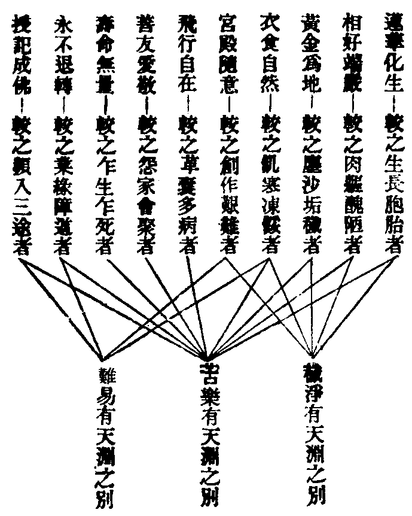
雲棲大師普勸念佛
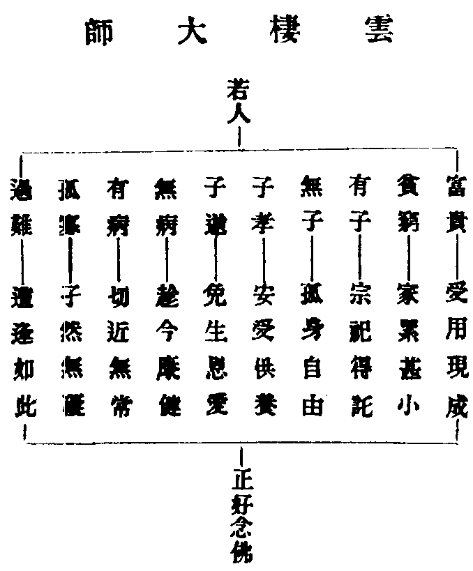
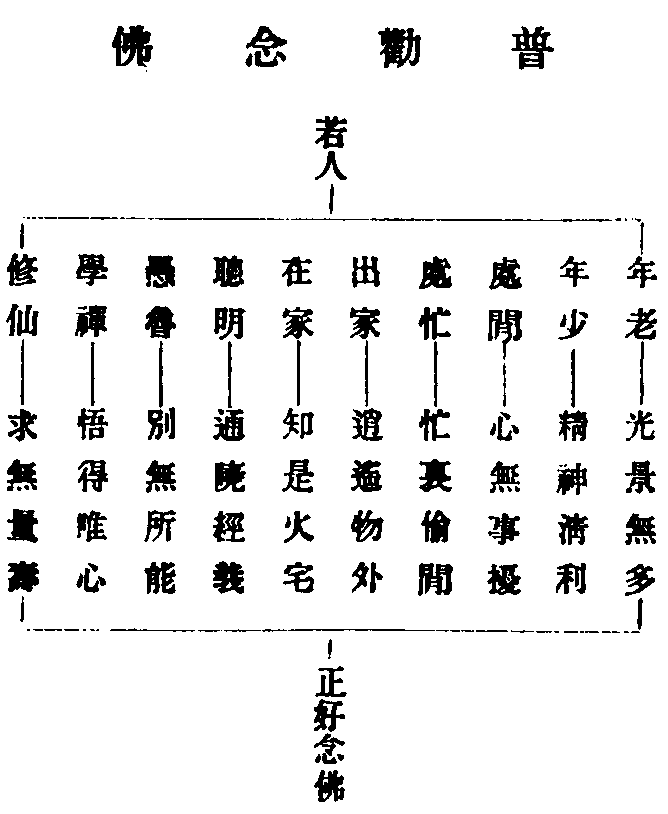
念佛九種勝
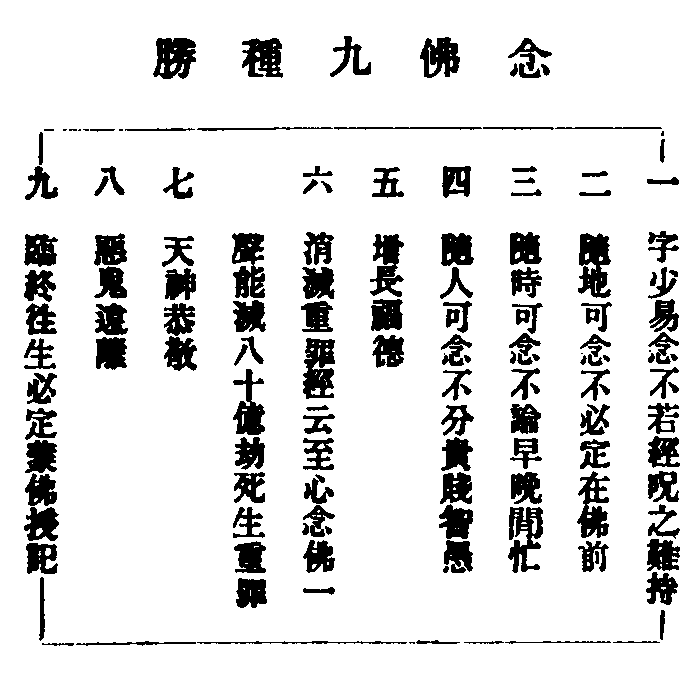
三界四生六道
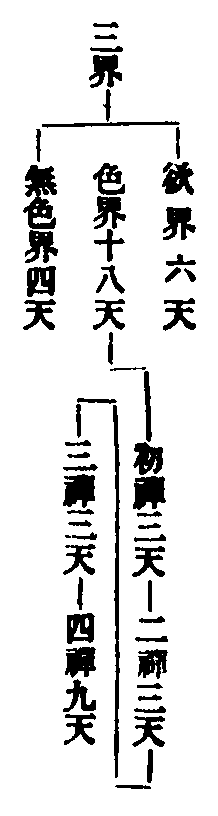
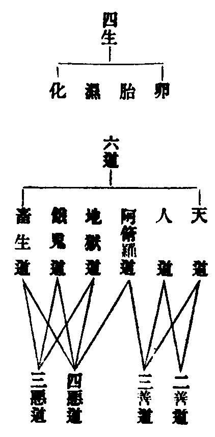
七種不淨觀
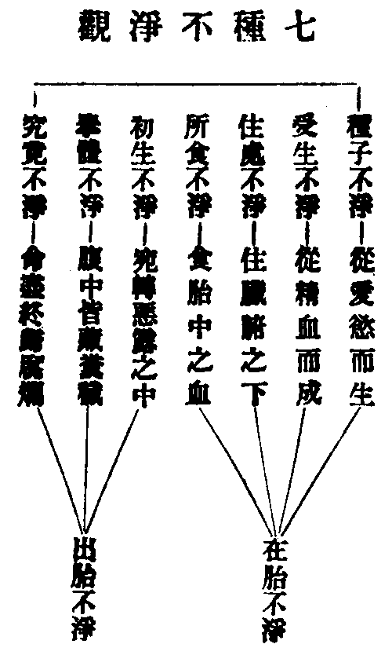
三種人必定往生
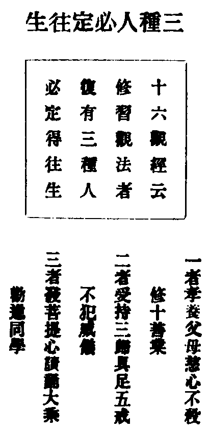
發五種心決定往生
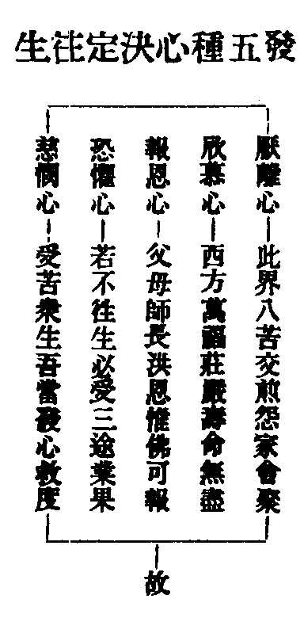
九想觀
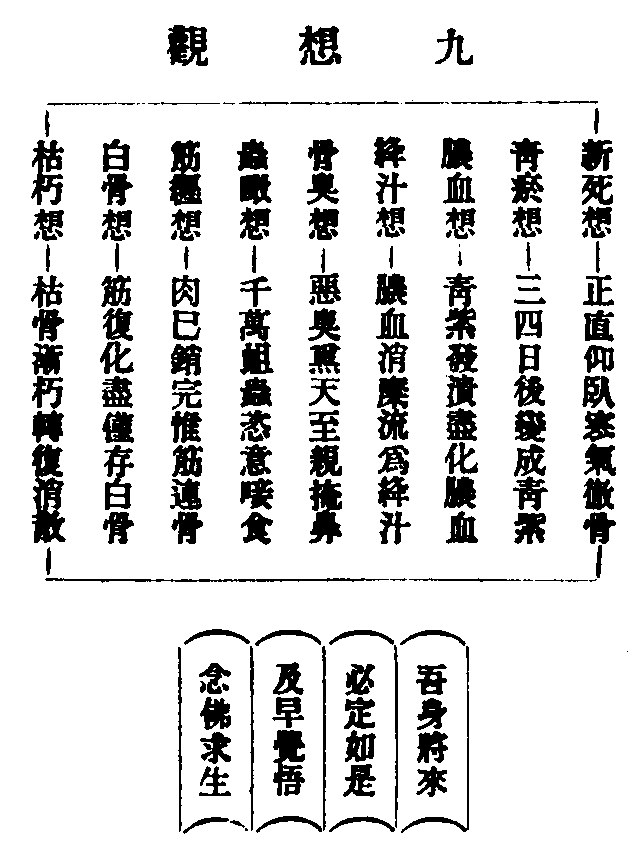
白骨觀
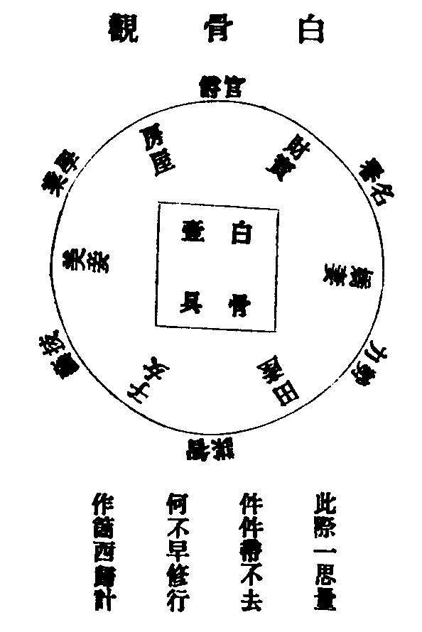
七可惜
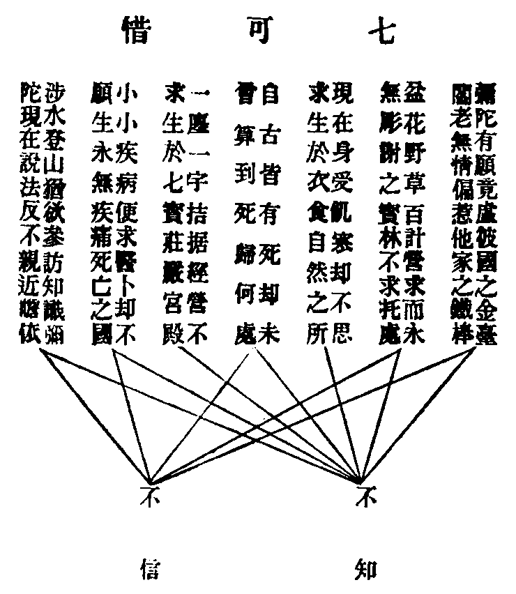
No. 1173
西歸直指卷之一
淨土綱要
世尊為一大事因緣出現於世。憐憫眾生輪迴六道。頭出頭沒。受苦無量。故於十方佛土中。指出西方極樂世界。使人知所趨向。而又授以至簡便法。使但念彼佛即便往生。真生死海中大慈航也。吾輩宿福深厚。幸遇此法。不敢仰負如來厚恩。故將大小本彌陀要旨。節錄其槩。使閱者一覽便知。名為淨土綱要。
阿難啟請
大本彌陀經云。釋迦如來。一日容顏異常。阿難問之。佛言。汝所問者。勝於供養一四天下聲聞緣覺。及布施諸天人民。以至蜎飛蝡動之類。雖至累劫。猶百千萬倍。不可以及。所以者何。以諸天帝王人民。乃至蜎飛蝡動之類。皆因汝所問而得度脫之道。
觀此。則知淨土法門。不獨人類之梯航。亦諸天諸仙之寶筏。慎莫泛視。
佛土雙標
小本彌陀經云。爾時佛告長老舍利弗。從自西方。過十萬億佛土。有世界名曰極樂。其土有佛。號阿彌陀。今現在說法。舍利弗。彼土何故名為極樂。其國眾生。無有眾苦。但受諸樂。故名極樂。
法藏因地
大本經云。無量無數劫前。有世自在王佛出世。化度眾生。是時有大國王。往聽說法。頓然覺悟。乃捨王位。而往修行。號曰法藏比丘。即今阿彌陀佛是。對世自在王佛。發四十八大願。皆為濟度眾生。乃精進修行。入菩薩地。內則修慧。外則修福。於一切世間。無所不知。無所不見。且復托生於一切眾生中。同其形體。通其語言。以施教化。故上自天帝。下至昆蟲。無不欲令其超生極樂。
願滿成佛
大本經云。阿彌陀佛。歷大阿僧祇劫。行菩薩行。不計眾苦。手中常出一切衣服。飲食。音樂。乃最上所須之物。惠施眾生。令其歡喜。發無上菩提之心。歷無數百千萬億劫。方得成就從前所發四十八願。而入佛位。是以十方無量眾生。一念歸依。遂生其國。
四十八願
佛言。爾時法藏比丘。於彼佛所。發斯弘誓。應時大地震動。天雨寶華。以散其上。空中讚言。決定成佛。
如來得名
小本經云。彼佛何故號阿彌陀。舍利弗。彼佛光明無量。照十方國無所障礙。是故號為阿彌陀 又云。彼佛壽命。及其人民。無量無邊阿僧祇劫。故名阿彌陀。
堂宇寶池
大本經云。阿彌陀佛講堂精舍。皆自然七寶。相間而成。復有七寶。以為樓觀欄楯。勝於此世界中。第六天上。天帝所居。百千萬倍。其餘菩薩聲聞。所居宮殿。亦復如是。彼諸天及人。衣服飲食。微妙音樂。隨意而現。所居宮宇樓閣。稱其形色高下大小。或以一寶二寶。乃至無量眾寶。悉化現而成。然其宮宇。有隨意高大。浮於空中者。有不能隨意高大。止在寶地者。由其前世求道時。德有厚薄故。止有衣服飲食。則皆平等。宮宇內外。復有自然流泉。及諸池沼。若一寶二寶成者。其底沙亦以一寶二寶。如黃金池者。底白銀沙。水晶池者。底瑠璃沙。若三寶四寶。以及七寶成者。其底沙亦如是。池中皆八功德水。清淨香潔。味如甘露。其間復有百種異華。枝皆千葉。光色既異。香氣亦異。芬芳馥郁。不可勝言。
天樂雨華
小本經云。彼佛國土。常作天樂。黃金為地。晝夜六時。雨天曼陀羅華。其土眾生。常以清旦。各以衣裓。盛眾妙華。供養他方十萬億佛。即以食時還到本國。飯食經行。
池岸華樹
大本經言。諸寶池岸。有無數栴檀香樹。吉祥華果。香氣流布。又有各色蓮華。彌覆水上。又有七種寶樹行列。其純一寶樹者。根。莖。枝。葉。華。果。皆以一寶。二寶為一樹者。根。莖。枝。葉。華。果。亦以二寶。如是行行相植。枝枝相準。華華相順。果果相當。乃至周徧世界。不可勝視。
樹網宣音
小本經云。彼佛國土。微風吹動諸寶行樹。及寶羅網。出微妙音。譬如百千種樂。同時俱作。聞是音者。自然皆生念佛念法念僧之心。
德水香華
大本經言。生西方者。若入七寶池中。澡雪形體。意欲令水沒足。水即沒足。欲令至膝。至腰。至頸。亦復如是。調和冷煖。無不順適。既出浴已。各坐蓮華之中。自然微風徐動。吹諸寶樹。或作音樂。吹諸寶華。皆成異香。散諸菩薩聲聞大眾之上。極目明麗。芳香無比。及至小萎。自然亂風吹去。大眾有欲聞法者。有欲聞音樂者。有欲聞華香者。有皆不欲聞者。各如其意。不相違忤。
鳥宣偈頌
小本經云。彼國常有種種奇妙雜色之鳥。白鶴。孔雀。鸚鵡。舍利。迦陵頻伽。共命之鳥。是諸眾鳥。晝夜六時。出和雅音。其音演暢五根。五力。七菩提分。八聖道分。如是等法。其土眾生。聞是音已。皆悉念佛念法念僧。
景象殊勝
大本經言。剎中諸上善人。壽皆無央數劫。皆洞視徹聽。遙相瞻見。遙聞語言。其面目。皆端正淨好。無復醜陋。其體性。皆智慧勇健。無復庸愚。凡所存念。無非道德。形諸談說。無非正事。各相愛敬。無或憎嫉。各通宿命。雖歷萬劫。己所從來。靡不知之。復知十方世界去來現在之事。復知無央數世界。天上天下一切眾生心意所念。復知彼於何劫何歲。盡得度脫為人。得生極樂世界。
自然飲食
大本經云。阿彌陀佛剎中諸往生者。其飯食時。有欲銀鉢者。有欲金鉢者。有欲水晶瑠璃鉢者。乃至有欲明月珠摩尼珠者。皆隨其意。化現在前。百味飲食。充飽其中。多亦不餘。少亦不缺。食已。自然消散。無有渣滓。或但見色聞香。自然飽滿。既已食訖。器皿自去。再欲食時。復現如前。微妙快樂。次於泥洹。
隨宜修習
大本經云。彼國人民。有在地講經者。有在地誦經者。有在地聽經。思道。坐禪者。亦有在虗空中講經者。有在虗空中誦經者。在虗空中聽經。思道。坐禪者。於是未得須陀洹者。因此得須陀洹。未得斯陀含者。因此得斯陀含。乃至未得阿羅漢。及不退轉菩薩者。因此得阿羅漢。及不退轉菩薩。各隨其質。欣然適意。
音容相貌
佛問阿難。譬如丐者。在帝王側。形相容儀。可相類否。阿難答言。丐者羸陋醜惡。安可比擬帝王。佛言帝王雖貴。然較之轉輪聖王。猶如丐者。轉輪聖王。僅王四天下。然比忉利天王。又百千億倍。不可以及。忉利天王。比第六天王。又百千萬倍。不可以及。第六天王。比阿彌陀佛剎中。諸菩薩聲聞。諸上善人。又百千萬倍。不可以及。
作觀見佛
十六觀經載頻婆娑羅王之后韋提希。因其子阿闍世王弑逆。不願住此娑婆濁惡世界。求生西方清淨佛土。佛告以修十六種觀想之法。至第七觀。遂見西方瑠璃寶地。遙覩阿彌陀佛。光明相好。佇虗空中。觀音侍左。勢至侍右。世尊遂授記韋提希。及五百侍女。皆生淨土。此用觀想之法以往生也。然佛告韋提希。汝是凡夫。心想羸劣。如來有異方便教汝。故得往生。所以蓮大師云。觀法深玄。祇應守約。守約者。持名之謂也。
稱名見佛
世尊說大阿彌陀經。備言極樂世界。種種莊嚴。告阿難曰。汝起整衣。合掌恭敬。面西為阿彌陀佛作禮。阿難如教作禮。白佛言。願見阿彌陀佛。及極樂世界。與菩薩聲聞大眾。說是語已。阿彌陀佛。即放大光明。普照一切世界。爾時阿難。見阿彌陀佛。容貌巍巍。如黃金山。會中四眾。悉皆覩見。并見國土一切莊嚴。是時盲者皆見。聾者皆聞。啞者皆語。跛者皆行。地獄餓鬼。皆獲安樂。諸天樂器。不鼓皆鳴。
持名往生
阿彌陀經云。若有善男子善女人。聞說阿彌陀佛。執持名號。若一日。若二日。若三日。若四日。若五日。若六日。若七日。一心不亂。其人臨命終時。阿彌陀佛。與諸聖眾。現在其前。是人終時。心不顛倒。即得往生阿彌陀佛極樂國土。又云。若有信者。應當發願。生彼國土。
此段乃一經之要旨。重在執持名號。一心不亂上。
生非易事
佛告舍利弗。不可以少善根福德因緣。得生彼國。
前云若有信者。應當發願。故信為入門之要務。人若不信。便不能念佛。不能念佛。便是無善根。無福德。無因緣矣。如此甘露法門。乃竟於我無分。豈不痛惜。余每誦經至此。不覺毛骨悚然。有時淚下如雨。既復幡然自慰曰。只愁不欲往生耳。果能信得阿彌陀佛真。便是我之善根。果能發得菩提心切。便是吾之福德。果能念得如來聖號。便是吾之因緣。安有不往生之理。法華經云。心生大歡喜。自知當作佛。
末後付囑
佛告阿難。若有人已發願。今發願。當發願。欲生阿彌陀佛國者。是諸人等。皆得不退轉於阿耨多羅三藐三菩提。於彼國土。若已生。若今生。若當生。是故舍利弗。汝等皆當信受我語。及諸佛所說。
人在三界中。如在圍城內。急求出路。方能逃脫。乃幸而開得一門。可以直達家鄉。機緣豈可錯過淨土法門者。透出圍城。直達家鄉之路也。釋迦如來。大慈大悲。憫念被圍之人。必受荼毒。所以開此捷徑之門。招人速出。此段經文。是最後叮嚀語。不獨教人諦信如來自己之言。并示以信受十方諸佛之語。悲心亦甚切矣。吾輩身荷大恩。無由上報。唯有如說修行。立弘誓願。求生淨土而已。謹將修持法門等。開列於後。
修持法門
每日清晨。盥嗽焚香。合掌向西。(如有佛像即便向之)至心奉為四恩三有法界眾生。頂禮。
菩薩四弘誓願
禮拜訖。即誦阿彌陀經。或平日所誦經。或平日所持呪。皆不拘多寡。但須至心持誦。誦畢。即回向西方 略停。即一心念佛。
念佛緣起
阿彌陀佛身金色 相好光明無等倫
白毫宛轉五須彌 紺目澄清四大海
光中化佛無數億 化菩薩眾亦無邊
四十八願度眾生 九品咸令登彼岸
南無西方極樂世界大慈大悲阿彌陀佛 隨念六字名號。或四字名號。或幾百聲。或幾千聲。各隨其力。念完。即念觀音勢至二菩薩名號。即念回向文一徧。回向西方 若每日所課佛號。多至幾千幾萬聲。當分作幾時念。每念一時。即回向一次 其回向文。有詳有略。詳者。雲棲大師所定。略者。慈雲懺主所定。最略者。即經偈十六句。(見後)各隨其力。
十念法門(此為最忙者設)
每日清晨盥[口*敕]焚香。(若無香華須心上觀想作無數香華供養三寶)合掌面西。至心頂禮。
隨合掌面西。至心念南無阿彌陀佛六字聖號。要一心不亂者盡十口氣。謂之十念。然不可因記數之故。反分其心。宜手執數珠。心自不亂。手但記數。約念三串四串或五串十串亦可。念畢。隨念十六句回向偈 偈曰。
我今稱念阿彌陀 真實功德佛名號
唯願慈悲哀攝受 證知懺悔及所願
往昔所造諸惡業 皆由無始貪瞋癡
從身語意之所生 一切我今皆懺悔
願我臨欲命終時 盡除一切諸障礙
面見我佛阿彌陀 即得往生安樂剎
我既往生彼國已 現前成就此大願
普願沈溺諸眾生 速往無量光佛剎
報恩法門
修淨土者。靜想吾一生以來。受恩最深者。莫如父母。自十月懷胎。三年乳哺。以及教訓養育。此恩此德。何能上報。又念吾從無量劫來。托生之數。不可窮盡。則父母之恩未報者。亦不可窮盡。此無量宿世父母。現今必有在地獄中。燒煑屠割者。必有在餓鬼中。飢火焦燃者。必有在畜生中。負重牽犂者。吾若不信有此。是猶母雞被殺。而小雞不信也。吾若不思救度。猶小雞雖見母殺。而不知所以救度也。興言及此。便當涕淚悲泣。舉身接地。代為宿世今生父母。及受恩師長眷屬。發菩提心。至心稱念聖號若干聲。念念中先免其八十億劫死生重罪。俟我往生之後。回入娑婆。然後盡行度脫 若有至親骨肉。新遭喪亡者。亦回向在內。
助緣法門
修淨土者。每日清晨。觀想一閻浮提。推至大千世界中。所殺牛羊犬豕。禽鳥魚鱉之類。每日無算。積其尸。可以過高山之頂。收其血。可以赤江海之流。此等異類。止因宿生造業。不知有西方。故受輪迴之苦。吾當代其發菩提心。至心稱念佛號若干聲。念念中先免其八十億劫死生重罪。俟我往生之後。回入娑婆。然後盡行度脫。
又
又觀想一閻浮提。推至大千世界中。一切餓鬼。為飢渴所逼。咽喉出火。骨節出聲。受苦無量。又念八寒八熱大小地獄中。斬砍燒磨。一日一夜。萬死萬生。受苦無量。止因宿世廣造惡業。不信有西方。故受輪迴之苦。我當代其發菩提心。至心稱念佛號。念念中先免其八十億劫死生重罪。俟我往生之後。回入娑婆。然後盡行度脫。
又
修淨土者。每日之間。隨力隨分。所行善事。如布施貧窮。齋僧塑像。買物放生之類。一毫之福。即代為十方受苦眾生。回向極樂世界。
西歸直指卷之一